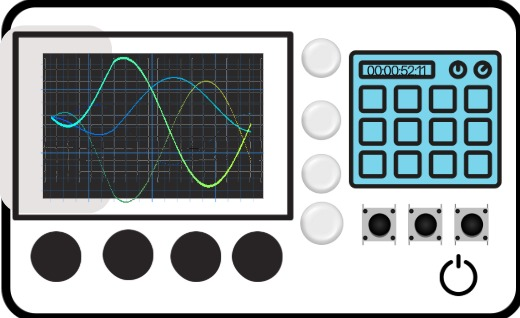

BFSK Modulation System with Input Enforcement
Power ON
Reset Connections
Show on Oscilloscope
Invalid connection!
×
Oscilloscope Display
Input Binary Signal (NRZ)
Function Generator 1 (Mark Frequency)
Function Generator 2 (Space Frequency)
BFSK Output Signal

Function Generator 1
Output
Frequency:
2
MHz
-
+
Amplitude:
15
V
-
+
Function Generator 2
Output
Frequency:
2.5
MHz
-
+
Amplitude:
15
V
-
+
Binary Input (NRZ Data)
7
6
5
4
3
2
1
0
Output
Modulator 1 (Mark)
Signal
Carrier
Output
Modulator 2 (Space)
Input
Carrier
Output
NOT Gate
Input
Output
Summing Amplifier
Input 1
Input 2
Output